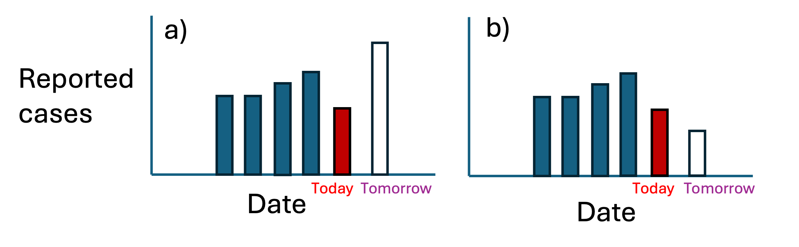

Disease outbreaks and metrics
Overview
When an infectious disease outbreak begins, a time-sensitive question arises: “are things getting better or worse?” A great deal of research has gone into how to answer this question, and making sense of the findings is the purpose of this website.
Suppose you work at a public health agency, and you have the following reported case data in blue:
You may want to know, are cases tomorrow going to be a) higher than today or b) lower than today. Just looking visually, either seems plausible: in case a) perhaps today’s cases are a outlier, and the true trend will continue upwards, and in case b) perhaps today’s cases are not an outlier, and tomorrow’s cases will be lower.
To make a more informed decision, there are two critical questions we need to answer:
1. How long does it take for an infected person to infect others? If you knew that it took at least 2 days for an infected person to infect others, you might be more inclined to think that tomorrow’s cases may be higher than today’s, as they are in a). However, if you knew that it only took 1 day at most for each infected person to infect others, you might think it more likely that tomorrow’s cases will be lower than today’s, as they are in b).
Therefore, this quantity, known as the generation interval, can help you make an informed decision about whether you think cases tomorrow will be higher or lower than today. The generation interval can estimated by a number of methods, including analyzing data of infector-infectee pairs.
2. How many previous days of information do you want to look at when deciding what tomorrow’s cases will be? Again looking at the figure above, if you want to use the previous 4 days to make your decision, you will probably guess that tomorrow’s cases will be higher than today’s. However, if you choose a smaller window of time, you may be inclined to think that tomorrow’s cases will be lower.
The question of how many days to consider in your estimation (and how much weight each previous day recieves in estimating what the next day of cases will be) is characterized in a parameter known as the effective reproductive number, or \(R(t)\).
Knowing \(R(t)\) can help you begin to make an informed guess as to the current state of a disease outbreak, as it has the following values and interpretations at a specific point in time:
| R(t) | Interpretation at time t | Outbreak is ... |
| < 1 | Each infected person infects on average fewer than one additional person | shrinking |
| = 1 | Each infected person infects on average about one additional person | stable |
| > 1 | Each infected person infects on average more than one additional person | growing |
However, estimating \(R(t)\) is not straightforward, and is the subject of a wealth of academic research and proliferation of software packages. Guidance in choosing a choosing a method (and a package) is the purpose of this website.
How to choose a tool to estimate \(R(t)\)
There has been a proliferation of software tools that make inference about the current state of an infectious disease outbreak.
Important to keep in mind when choosing a tool to estimate \(R(t)\) is this fact: \(R(t)\) is a latent variable, which means cannot be measured directly. Instead, it can only be estimated from observable variables (like reported case counts).
The ideal estimator of \(R(t)\) requires a list of the number of newly infected cases by infection date and the generation interval. This is because we want to know about the state of disease based on when people are infected, not when they report having symptoms. In reality we usually only observe the new number of newly reported cases and can only estimate the serial interval, which is the time between symptom onset of an infector-infectee pair. In this case the estimate of \(R(t)\) will lag reality without some adjustments.
Each software package that estimates \(R(t)\) makes different adjustments and assumptions about how these parameters relate, which leads to variations in estimated \(R(t)\) even if the same input data are used. In addition, different packages require different levels on input data to provide additional robustness in estimated outputs.
The purpose of this document
Therefore, the purpose of this document is to provide guidance about which \(R(t)\) estimation software to choose for different analytical goals. First, see our Example outbreak for the different components of disease outbreak that can be modeled differently. Next, see our Decision tool for how to choose software for different analytical goals.